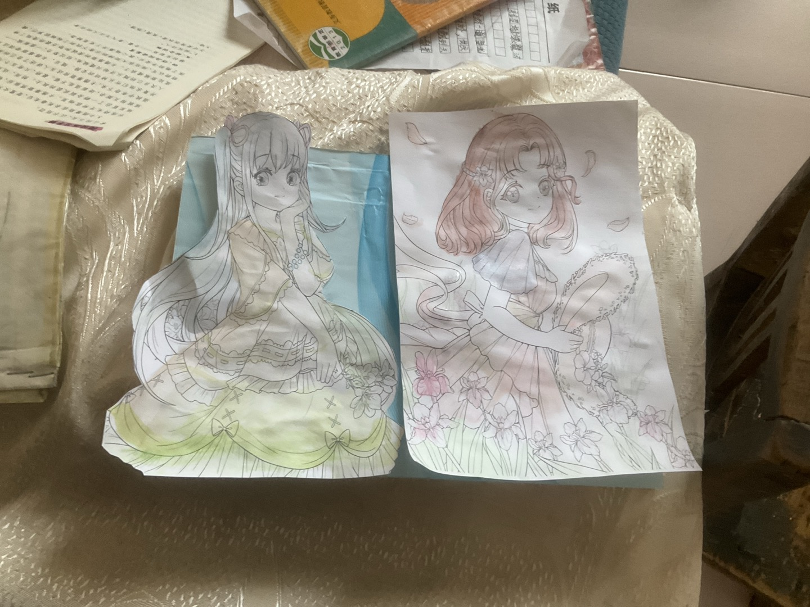
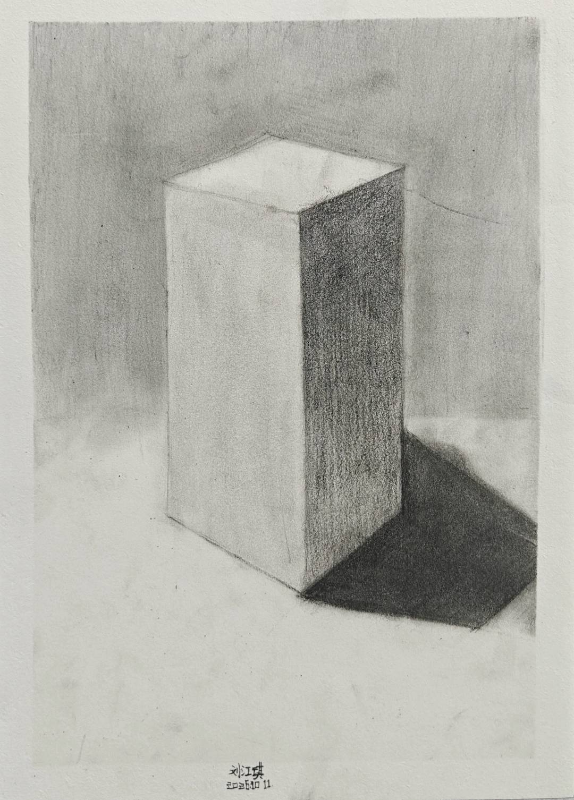

一下午就涂了这一张，笔都快没水了。但你看这两位小姐裙子的褶皱，值得。以后谁说我做事三分钟热度，我就把这张画拍他脸上。
原图：iCloud_Photos/2026/08/27/IMG_0037.JPG
👍 赞💬 评论↗ 转发
翻相册翻到这张樱花图，直接停住。蓝头发、白绒帽、满屏的粉，是那种一眼就会存下来的图。春天快到吧，我也想去树底下站一站。

原图：iCloud_Photos/2026/08/30/IMG_0081.JPG
👍 赞💬 评论↗ 转发
铅笔稿打了三遍，橡皮擦得比铅芯用得还快。画完这一位抱熊的姑娘，手臂酸得抬不起来，但她看起来比我先睡了，值。
原图：iCloud_Photos/2026/09/23/IMG_0248.JPG
👍 赞💬 评论↗ 转发
换头像了。这位白发妹妹的眼神，跟我周一早上的表情一模一样：还没醒，但已经到了。暂定用一个月，欢迎评论区打分。
原图：iCloud_Photos/2026/09/26/IMG_0258.JPG
👍 赞💬 评论↗ 转发
今天被这两只小猫治愈了。左边这位连眼镜都是画的，还啃着小鱼干；右边这位戴蝴蝶结、叼猫爪，比我出门的仪式感强多了。
原图：iCloud_Photos/2026/09/30/IMG_0261.JPG
👍 赞💬 评论↗ 转发
粉色的、小小的、抱着猫的。相册里最软的一张图，留着，心情不好的时候就翻出来看三秒，比喝奶茶管用，还不长胖。
原图：iCloud_Photos/2026/10/04/IMG_0267.JPG
👍 赞💬 评论↗ 转发
美术课第一张正经素描：一个长方体。老师说「先画准形，再谈光影」，我听了三遍才听懂。投影是整张画里我最满意的部分，其余的请自动忽略。
原图：iCloud_Photos/2026/10/13/IMG_0278.JPG
👍 赞💬 评论↗ 转发
一只橘猫在看书，比我上周看书的时间加起来还长。以后假装努力的时候，就发这张图，配文一律「今天也是充实的一天」。

原图：iCloud_Photos/2026/10/16/IMG_0002.JPG
👍 赞💬 评论↗ 转发
这个「My travel」的娃太好看了，粉羽绒服、小行李箱、连备用鞋都配了两双。桃园树下俩小姑娘，我隔着塑料壳都想跟她们去春游。

原图：iCloud_Photos/2026/10/24/11.JPG
👍 赞💬 评论↗ 转发
Q 版猫耳小妹来报到。毛衣、短裙、小皮鞋，尾巴还翘得那么精神。存了当壁纸，我妈路过看了一眼说：这猫耳朵挺可爱。行，认证通过。

原图：iCloud_Photos/2026/10/27/img_v3_0216s_….JPG
👍 赞💬 评论↗ 转发